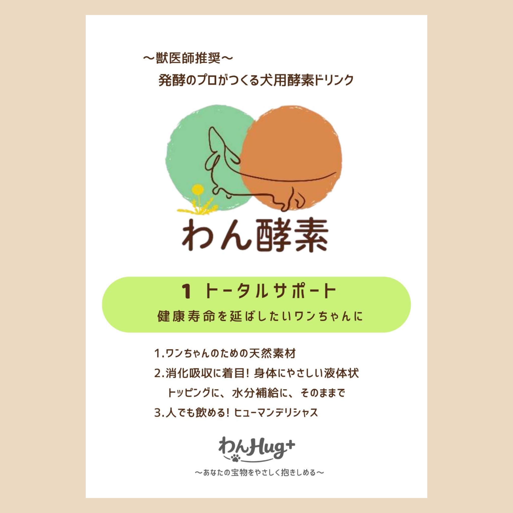
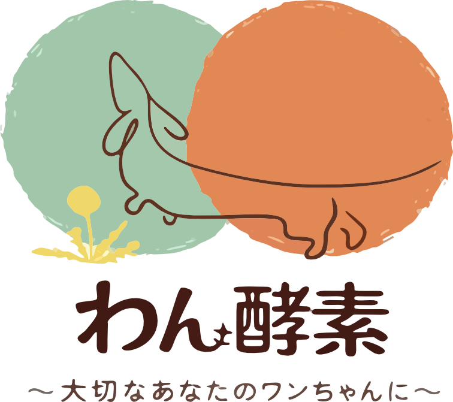
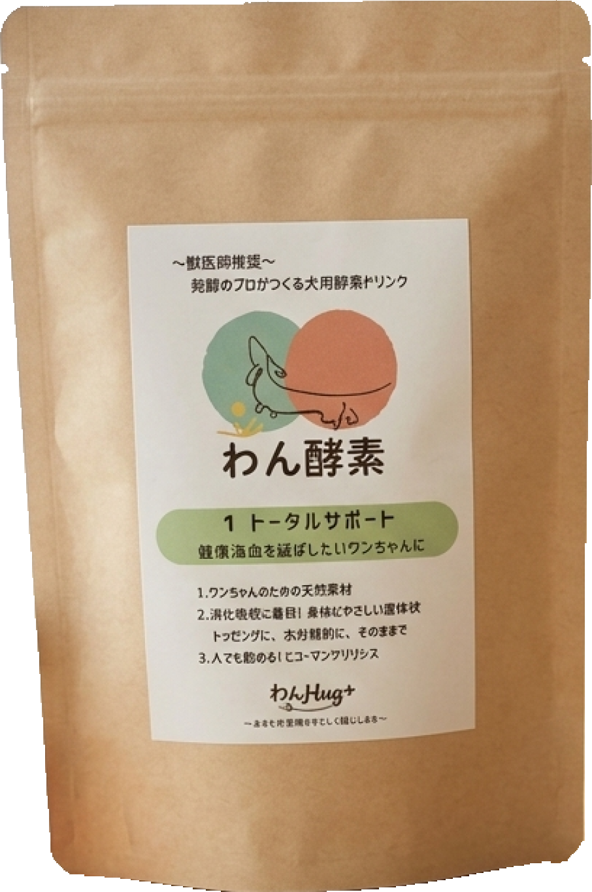
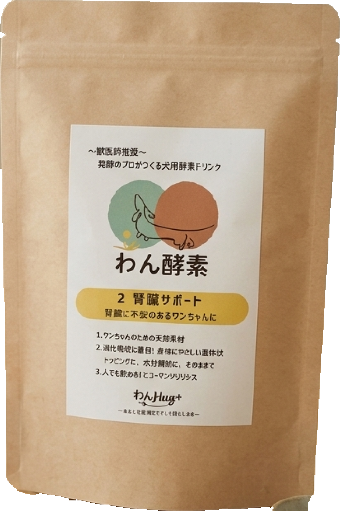
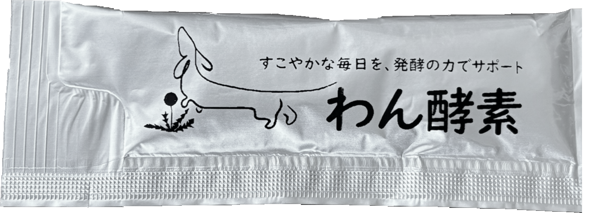
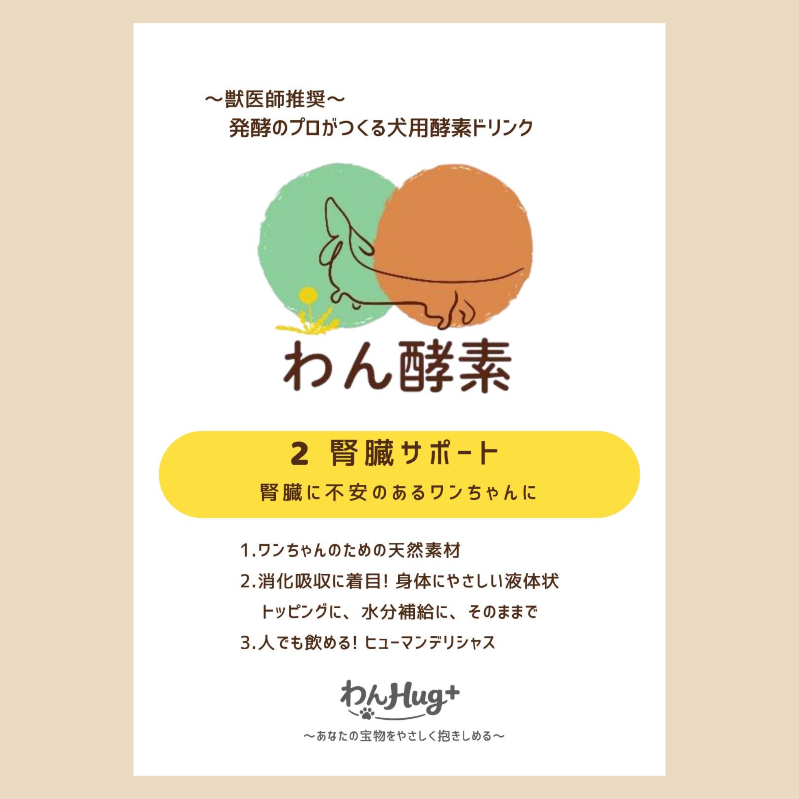

1 Total Support
健康寿命を延ばしたいワンちゃんに。
日々の消化・吸収、代謝、腸内環境まで幅広く支える基本設計です。 初めてのわん酵素としても選びやすいラインです。
Fermented Pet Wellness




Made for every day
液体だから、毎日の食事に取り入れやすい。 おさんぽ後の水分補給や、いつものフードのトッピングとしても続けられます。
3,650 days fermentation
Lineup Visual
毎日の健康維持を広く支えるトータルサポートと、腎臓が気になる犬に配慮した 腎臓サポート。実際の包材とラベルを並べ、違いがひと目で分かる構成にしました。

日々の消化・吸収、代謝、腸内環境まで幅広く支える基本設計です。 初めてのわん酵素としても選びやすいラインです。

腎臓負荷に配慮した超低タンパク質設計と、腸内環境を通じた 毎日のコンディション維持を意識したラインです。
Format
Product Specifications
すべての製品に共通する発酵技術と、目的に合わせた2つの処方。 難しい製品情報を、順番にわかりやすくご紹介します。
POINT01
時間をかけた
多段階・複合発酵
本シリーズの基盤となる植物抽出濃縮発酵液は、ニホンコウジカビと 出芽酵母を用い、10年間におよぶ多段階・複合発酵プロセスを経て製造されています。
加熱殺菌（85℃・30分）後の最終製品において、酸性プロテアーゼおよび α-アミラーゼの特性に加え、熟成中に形成される保護コロイドが 酵素タンパク質の立体構造を包み込みます。
犬の消化管は人間より短く、植物性栄養素の消化効率に配慮が必要です。 10年間の微生物代謝により、高分子構造を遊離アミノ酸、オリゴペプチド、 単糖・二糖類へ近づけ、吸収しやすい状態を目指しています。
可溶性多糖類や高分子ポリフェノールが水和マトリクスを形成し、熱による変性・凝集を物理的に抑える設計思想です。
胃液環境下でも活性を保つことを想定し、食餌中のタンパク質や炭水化物を胃内で先行可溶化する設計です。
消化に伴うエネルギーロスを抑え、低負荷な栄養補給を目指します。
10年熟成種菌は、外因性消化酵素、保護コロイド、低分子化基質が同時に存在する 発酵マトリクスです。消化エネルギーの消耗を抑えたい局面で、食品として穏やかに 支えることを意図しています。
POINT02
どちらも10年熟成の発酵技術がベース。違いは、毎日の悩みに合わせた素材設計です。
POINT03
多臓器エイジングケアを見据えた、全身サポート処方。
キクイモ由来のイヌリンとツルレイシ由来の成分を組み合わせ、高齢犬の糖代謝と体重管理に配慮しています。
植物由来成分を組み合わせ、揺らぎやすい腸管粘膜と腸内環境を支える設計です。
メシマコブ由来のβ-グルカンと発酵した高麗人参を組み合わせ、高齢期の免疫バランスに配慮しています。
腸腎連関を見据えた、超低タンパク質・腎臓サポート設計。
腎機能低下に伴い、窒素代謝物が腸管へ分泌されやすくなる。
10年熟成バイオジェニックスが、腸内環境に配慮。
乳酸菌とオリゴ糖により、善玉菌の増殖を支える。
窒素代謝物を糞便として体外へ排泄する経路に配慮。
粗タンパク質を0.12%まで低減し、BUNの新たな発生源になりにくい設計です。
とうもろこしひげ、オオバコ、たんぽぽ、撫子、サンシュユを組み合わせ、水分バランスに配慮しています。
微量の鶏肉粉末と発酵由来の風味を生かし、自発的な経口摂取を支えます。
Pet Food Information
本ページは、わん酵素シリーズの素材構成および製品設計を説明する技術資料です。 特定の疾病の診断、治療、予防を目的としたものではありません。愛犬の疾患や投薬中の利用については、 獣医師の判断に従ってください。